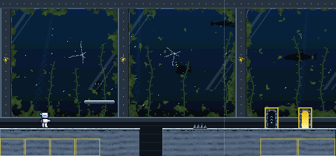
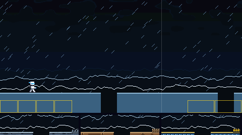
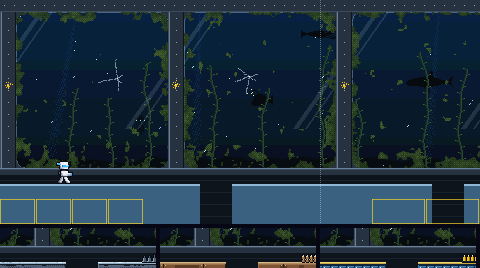
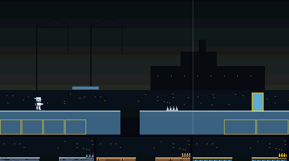
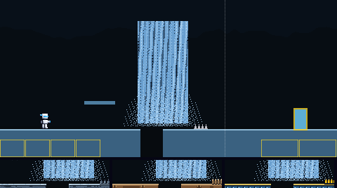
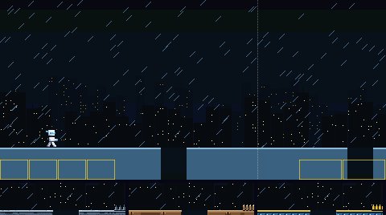
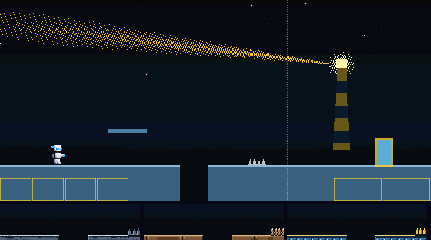
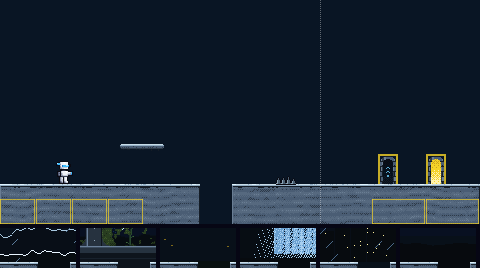
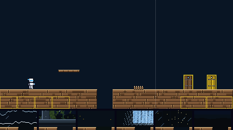
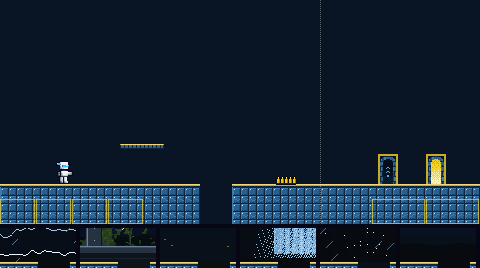

The way to Tempest Man's door. Six backdrops, and three materials (each a floor, platform, spikes, boss door and exit door), all built from his colours. Batch 1 of 3.
Picked by the owner on 5 Nov 2026, in their words: "2a but to prevent the player from thinking the physics for the level are different than normal, make the underwater appear to be behind algae covered, lightly cracked thick underwater habitat glass, like a subsea laboratory. kelp and the silhouette of deep sea creatures should be animated in"
Done: backdrop 2 is now the view out of a subsea laboratory, through thick glass panes in a riveted metal frame, with algae growing in from the edges and a few light cracks. Outside, kelp sways, bubbles rise, and the silhouettes of deep-sea creatures (two sharks, an anglerfish with a glowing lure, a squid and a jellyfish) fade in out of the dark, glide by and fade away. The window frame scrolls faster than the sea behind it. Material A, wet slate, is as offered. The other variants are kept as they were offered. Batch 1 is in the game.
Backdrop 2 behind material A, with the player standing still so the kelp and the creatures show. The boss door is on the left, the exit door on the right. This picture moves, and loops every 8 seconds.

Each is shown behind today's plain pieces, so only the backdrop changes. The strip under it is its pit edge with floors A, B and C in front. The three marked MOVING scroll in layers, the far ones slower; their pictures move.






Each shows the floor with a pit, a platform, spikes, the boss door (left) and the exit door (right), in front of today's flat colour. The strip under it is its pit edge against backdrops 1 to 6. The contrast numbers are the worst against any of the six; the game asks at least 2 for the ground, 4.5 for its lit edge and 4.5 for the white player on it.


